Chapter 4 Results
4.1 Abstract
In this chapter, we use exploration data analysis to answer the questions that we proposed in the proposal chapter. This chapter is divided into three parts.
In the first part we apply line plot, treemap, and Cleveland dot plot to brief visualize the spread and death cases of Covid-19. We find that at this stage of omicron variant of Covid-19, it is difficult and no efficient to completely prevent the spread of it. Thus, we have to learn how to live with Covid-19. Meanwhile, some areas still lack vaccines.
In the second part, we use mosiac plot and split bar chart to determine whether vaccinations can prevent the spread of Covid-19. It is astonishing that vaccines do not work in preventing the spread of Covid-19. Fortunately, our result shows that vaccines do reduce the death rate in all regions.
In the last part, we dive into vaccination details by scatter plot and box plot. The result shows that we’d better be fully vaccinated and even be vaccinated with a booster.
4.2 A brief look at the spread of Covid-19 and Vaccinations
First, we use line plot to visualize the monthly new reported and cumulative cases and deaths group by WHO_region.
# trend of different region
month_df <- read.csv("./data/monthly_data.csv")
temp_df <- month_df %>%
group_by(WHO_region, month) %>%
summarise(
New_cases = sum(New_cases),
New_deaths = sum(New_deaths),
Cumulative_cases = max(Cumulative_cases),
Cumulative_deaths = max(Cumulative_deaths),
)ggplot(temp_df, aes(x=month, y=New_cases, group = WHO_region, color = WHO_region)) + geom_line()+geom_point()+theme(axis.text.x = element_text(angle = 45, hjust = 0.5, vjust = 0.5))+ggtitle("Monthly Cases Reported")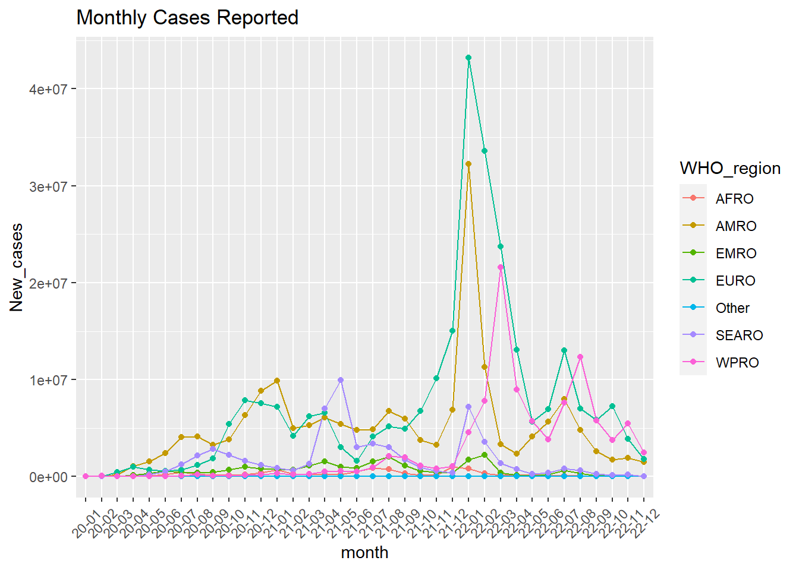
ggplot(temp_df, aes(x=month, y=Cumulative_cases, group = WHO_region, color = WHO_region)) + geom_line()+geom_point()+theme(axis.text.x = element_text(angle = 45, hjust = 0.5, vjust = 0.5))+ggtitle("Cumulative cases Every Month")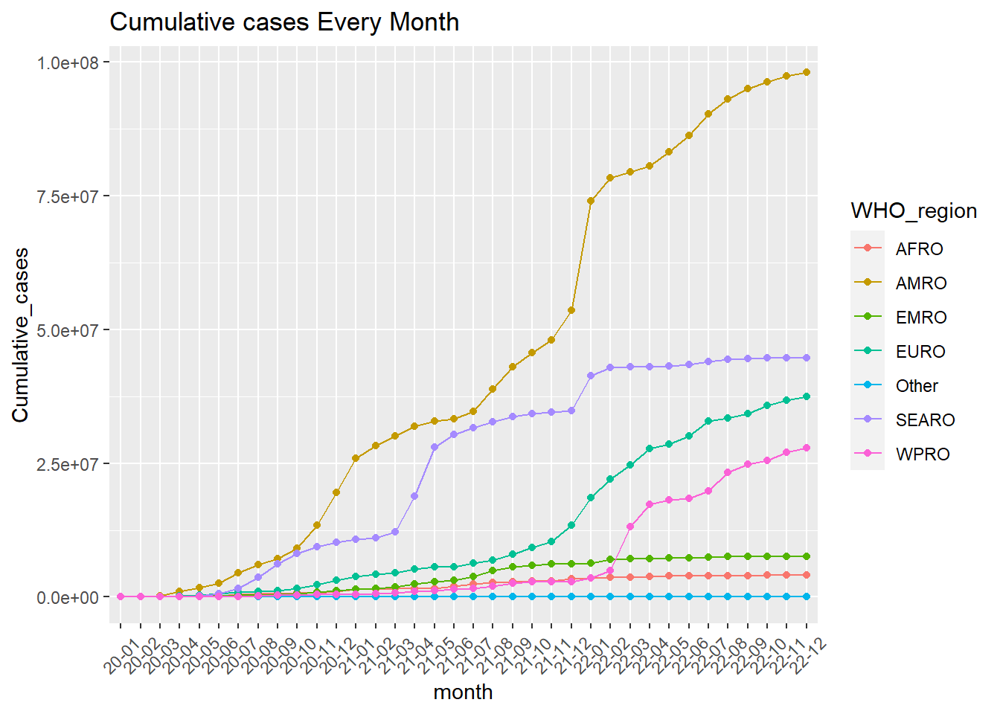
Although there is no clear pattern in the number of new cases reported per WHO_region during the first two years of covid-19 spread, there is a clear spike in new cases in economically active and populous regions around December 2021. At this time it was the omicron variant that became the dominant virus, and it was difficult for humans to completely prevent this virus from spreading. Evidence of this is that areas with relatively conservative epidemic prevention policies (WPRO) have also seen a surge in cases.
ggplot(temp_df, aes(x=month, y=New_deaths, group = WHO_region, color = WHO_region)) + geom_line()+geom_point()+theme(axis.text.x = element_text(angle = 45, hjust = 0.5, vjust = 0.5))+ggtitle("Monthly ")+ggtitle("Monthly Deaths Reported")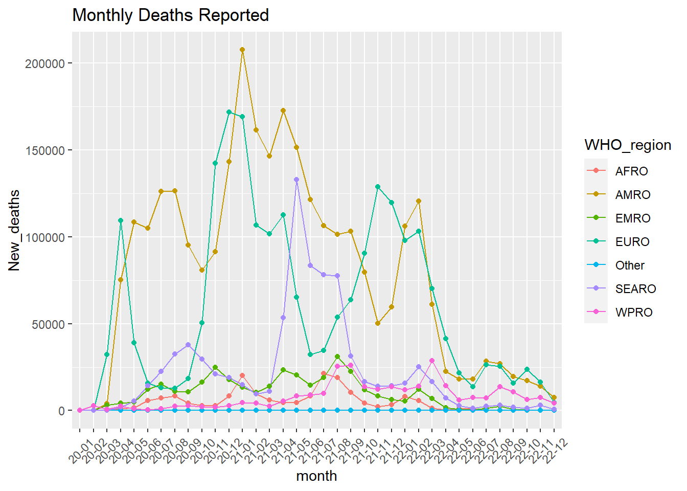
ggplot(temp_df, aes(x=month, y=Cumulative_deaths, group = WHO_region, color = WHO_region)) + geom_line()+geom_point()+theme(axis.text.x = element_text(angle = 45, hjust = 0.5, vjust = 0.5))+ggtitle("Cumulative Deaths Every Month")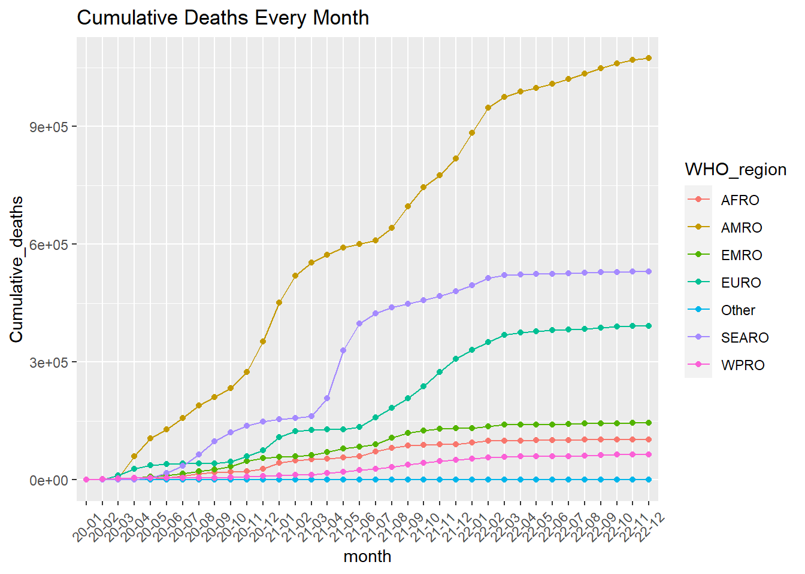
For a considerable period of time, two regions with relative lax policy about covid-19 led the world in the number of new deaths, while deaths in regions with more conservative epidemic prevention policies were kept at a consistently low level, suggesting that early isolation of infected populations does help to control the death toll. However, starting in 2022, the number of new deaths in each region reaches a lower range, suggesting that the “early detection, early isolation” is no longer a significant efficient method for new variants of the virus.
Next, we show the cumulative cases of each countries, territories, and areas until 2022-12-13 with the help of Cleveland dot plot, and group them by WHO_region.
# Extract the cumulative cases of the last day in the dataset
daily_last = daily_case[daily_case$Date_reported == "2022-12-13",]
ggplot(daily_last, aes(x = Cumulative_cases, y = reorder(Country, Cumulative_cases))) +
geom_point(color = "blue") +
facet_grid(WHO_region ~ ., scales = "free_y", space = "free_y") +
ggtitle('Cumulative Cases in All Countries, Territories, and Areas') +
xlab("Countries, Territories, and Areas") +
ylab('Number of Cumulative Cases') +
theme_linedraw() +
theme(panel.grid.major.x = element_blank(), panel.grid.minor.x = element_blank())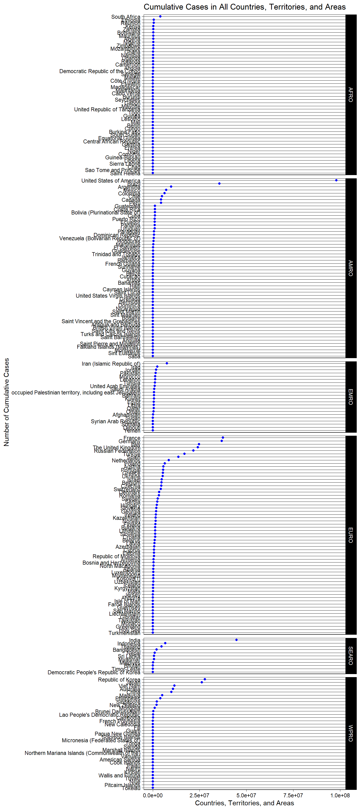
According to the Cleveland dot plot, Covid-19 seems prefer areas with high level of development in each WHO region, such as Republic of Korea and Japan in WPRO, France and Germany in EURO, South Africa in AFRO, etc.. This is because highly developed regions mean more intensive movement and communications of people and are more suitable for the spread of infectious diseases.
Next, we want to dig deep into how death rate varies around the globe. Also, we want to include the infected population as one of the axis for better visualization on Covid-19 data.
cases_country = daily_case[daily_case$Date_reported == "2022-12-13", ]
cases_country$death_rate = cases_country$Cumulative_deaths /cases_country$Cumulative_cases
library(treemap)
treemap::treemap(cases_country,
index=c("WHO_region", "ISO3"),
vSize="Cumulative_cases",
vColor="death_rate",
type="value",
palette="RdYlBu",
format.legend = list(scientific = FALSE, big.mark = " "))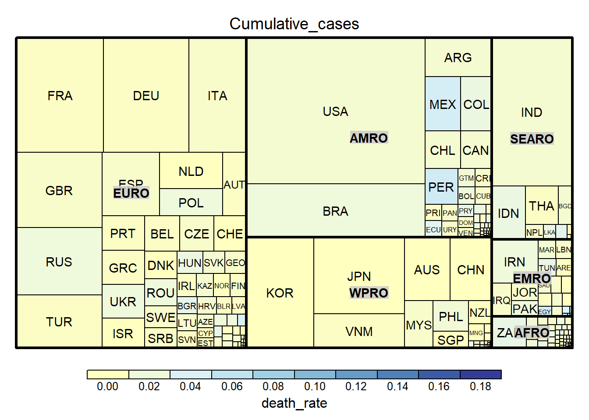
The above treemap exhibits how death rates vary around the globe and include the infected population as one of the measurement. The countries are divided into six regions and packed into rectangles for better comparison among each region. The filled color represents how much is the death rate of each country since the start of Covid-19. We use diverging spectrum for presenting color for the sake of better glimpse of countries on the two extreme which high death rates or low ones. Also, we use yellow and blue for the two extremes since they are complementary color which are stronger enough for comparison for most people. As we can see from the map, Europe and Americas accounts for the major parts of infected population. Also, we can see how the death rate inequality happens in the region. For example, in Americas, Mexico, Peru and Ecuador has high death rates over 10 percentages while the majority of countries in Americas has death rate less than 3%. Likewise, we can see the similar inequality in Eastern Mediterranean and Europe. Last but not least, since that the infected population varies largely depends on the countries’ population. For those coutry with less population, it is highly likely that they would not be shown clearly on this graph. For example, Yemen has death rate up to 18 percentages but since its population (both national and infected ones) is much smaller than other countries, it cannot be shown clearly in treemap. In sum, this treemap give us a great summarization of how the death rates vary across country on the aspect of infected population but it also neglect those small countries in desperate needs of further aids in Covid-19 crises.
Last, we reuse the Cleveland dot plot to show the vaccination status in different regions.
vcc[vcc$WHO_REGION != "OTHER",] %>%
select(COUNTRY,
WHO_REGION,
TOTAL_VACCINATIONS_PER100,
PERSONS_VACCINATED_1PLUS_DOSE_PER100,
PERSONS_FULLY_VACCINATED_PER100,
PERSONS_BOOSTER_ADD_DOSE_PER100
) %>%
gather(key = "type",
value = "percentage",
TOTAL_VACCINATIONS_PER100,
PERSONS_VACCINATED_1PLUS_DOSE_PER100,
PERSONS_FULLY_VACCINATED_PER100,
PERSONS_BOOSTER_ADD_DOSE_PER100) %>%
ggplot(aes(x = percentage, y = reorder(COUNTRY, type = "TOTAL_VACCINATIONS_PER1OO", percentage, .desc=FALSE), color = type)) +
facet_grid(WHO_REGION~., scales = "free_y", space = "free_y") +
geom_point() +
ggtitle("Vaccinations in Different WHO_region") +
ylab("Countries, Territories, and Areas") +
xlab("Percentage")
scale_fill_brewer(palette = "Spectral")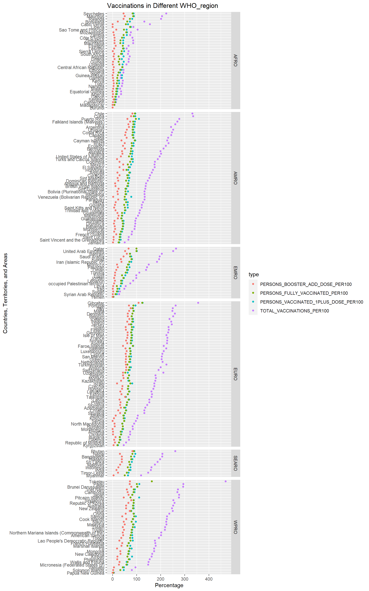
## <ggproto object: Class ScaleDiscrete, Scale, gg>
## aesthetics: fill
## axis_order: function
## break_info: function
## break_positions: function
## breaks: waiver
## call: call
## clone: function
## dimension: function
## drop: TRUE
## expand: waiver
## get_breaks: function
## get_breaks_minor: function
## get_labels: function
## get_limits: function
## guide: legend
## is_discrete: function
## is_empty: function
## labels: waiver
## limits: NULL
## make_sec_title: function
## make_title: function
## map: function
## map_df: function
## n.breaks.cache: NULL
## na.translate: TRUE
## na.value: NA
## name: waiver
## palette: function
## palette.cache: NULL
## position: left
## range: <ggproto object: Class RangeDiscrete, Range, gg>
## range: NULL
## reset: function
## train: function
## super: <ggproto object: Class RangeDiscrete, Range, gg>
## rescale: function
## reset: function
## scale_name: brewer
## train: function
## train_df: function
## transform: function
## transform_df: function
## super: <ggproto object: Class ScaleDiscrete, Scale, gg>Despite the fact that 3 years have passed since covid-19 was first identified, the majority of countries in all WHO regions still have fewer vaccinations than their total population, suggesting that there is still a shortage of vaccines all over the world. Meanwhile, there is a degree of inequity in the distribution of the vaccine for there are huge differences in vaccination status in each countries of the same WHO regions. In addition, African countries have the greatest vaccine shortage across all regions, with only six countries having more vaccinations than the total population.
4.3 Do vaccinations really work?
First, we use vaccination-metadata.csv to get the vaccination starting date. If there are several starting date of a nation, we use the earliest date as the representative of the vaccination’s starting date of that nation since we do not have how the exact vaccination policies implement for each nation. In the meantime, since that we do not have how long will human bodies’ begin to work against Covid-19 after vaccination for each type of vaccine, we simply take the vaccination start date as the start date for immune system take effects. The reason that behind our decision is that, in most countries around the world, specialists and governments has propagated that people who received vaccines should stay at home and take good rests for few days in order not to suffer from severe side effects which makes them not exposed to virus and with low chances to be infected. Hence, we can use the vaccination start date to approximate the start date for immune system take effects.
library(dplyr)
library(tidyverse)
# Data 1: WHO-COVID-19-global-data.csv
daily_case <- read.csv(file="./data/WHO-COVID-19-global-data.csv")
# Change country code to ISO3
library(countrycode)
daily_case$ISO3 = countryname(daily_case$Country, destination = 'iso3c')
daily_case$Date_reported = as.Date(daily_case$Date_reported)
# Data 2: vaccination-metadata.csv
vac_metadata <- read.csv(file="./data/vaccination-metadata.csv")
# Keep only before and after
vac_metadata <- vac_metadata[vac_metadata$START_DATE != "", ]
# Get vaccination EARLIEST start date for each country
vac_start = vac_metadata %>%
group_by(ISO3) %>%
summarize(START_DATE = min(START_DATE))
vac_start$START_DATE = as.Date(vac_start$START_DATE)
# Merge two df
daily_case <- merge(daily_case, vac_start, by="ISO3")Second, we use data/WHO-COVID-19-global-data.csv to calculate cumulative death cases before and after the vaccination start date for each country. Then, we can group by regions and generate the tidy data with each row containing region, vaccination indicator, case (alive or dead), and the count for case.
tmp1 <- daily_case %>%
group_by(WHO_region) %>%
summarize(
death_bf_vac = sum(New_deaths[Date_reported < START_DATE]),
live_bf_vac = sum(New_cases[Date_reported < START_DATE]) - sum(New_deaths[Date_reported < START_DATE]),
death_af_vac = sum(New_deaths[Date_reported >= START_DATE]),
live_af_vac = sum(New_cases[Date_reported >= START_DATE]) - sum(New_deaths[Date_reported >= START_DATE]),
)
# TIDYDATA: REGION(cat) | VAC(cat) | CASE(cat) | COUNT(num)
tidy <- tmp1 %>% pivot_longer(cols = !WHO_region, names_to = "Meta", values_to = "Freq")
library(stringr)
tidy$Vaccination <- ifelse(str_detect(tidy$Meta, "af_vac"), "Y", "N")
tidy$Case <- ifelse(str_detect(tidy$Meta, "live"), "Alive", "Died")
tidy <- subset(tidy, select = -c(Meta) )# Mosaic plot by Region, vaccination and case
library(vcd)
library(grid)
vcd::mosaic(Case ~ WHO_region + Vaccination,
direction = c("v", "v", "h"),
zero_size = 10,
highlighting_fill = c("#B9D9EB", "#00008B"),
tidy)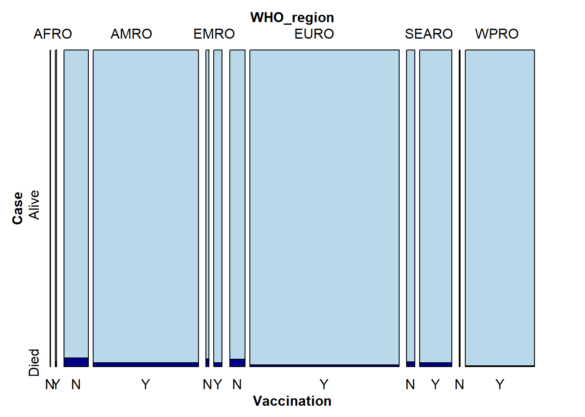
The mosaic plot above exhibits how dead cases and alive cases varies before and after national vaccination process starts across regions. As we can observe from the plot, EURO (Europe) and AMRO (American) accounts for major cases in the globe. Also, most importantly, vaccination do help in decreasing the death cases across regions, especially for WPRO (West Pacific, majorly East Asia) and EURO with total new death cases divided by total new cases drop by 85 percentages. However, in contrast to other regions, SEARO (South East Asia) seems to have the least improvement in death rate after vaccination but if we look at itself, its death rate also drop by 20 percentages.
# Mosaic plot by vaccination and case
vcd::mosaic(Case ~ Vaccination,
direction = c("v", "h"),
highlighting_fill = c("#B9D9EB", "#00008B"),
tidy)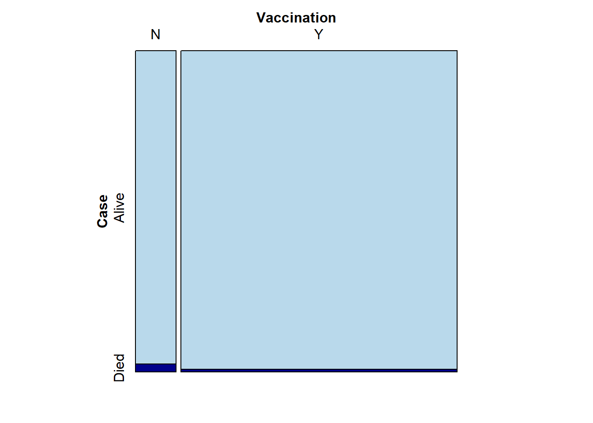
This mosaic plot depicted on the global scale which again convinces us that the vaccination do help in decreasing death rate.
Next, we aims to dig into the deeper insight on the correlation between vaccination and infected cases. As pointed out by Dr. Fauci and many specialists around the globe, the goal of the vaccine is not to prevent you from infecting Covid-19 but to prevent you from dying from this virus. Hence, we want to check is this statement true given on this three-year data.
tmp2 <- daily_case %>%
group_by(WHO_region) %>%
summarize(
cases_bf_vac_dayrate =
sum(New_cases[Date_reported < START_DATE]) / length(New_cases[Date_reported < START_DATE]),
cases_af_vac_dayrate =
sum(New_cases[Date_reported >= START_DATE]) / length(New_cases[Date_reported >= START_DATE]),
)
# REGION(cat) | VAC(cat) | CASE(cat) | COUNT(num)
tidy2 <- tmp2 %>% pivot_longer(cols = !WHO_region, names_to = "Meta", values_to = "count")
library(stringr)
tidy2$Vaccination <- ifelse(str_detect(tidy2$Meta, "af_vac"), "Yes", "No")
tidy2 <- subset(tidy2, select = -c(Meta) )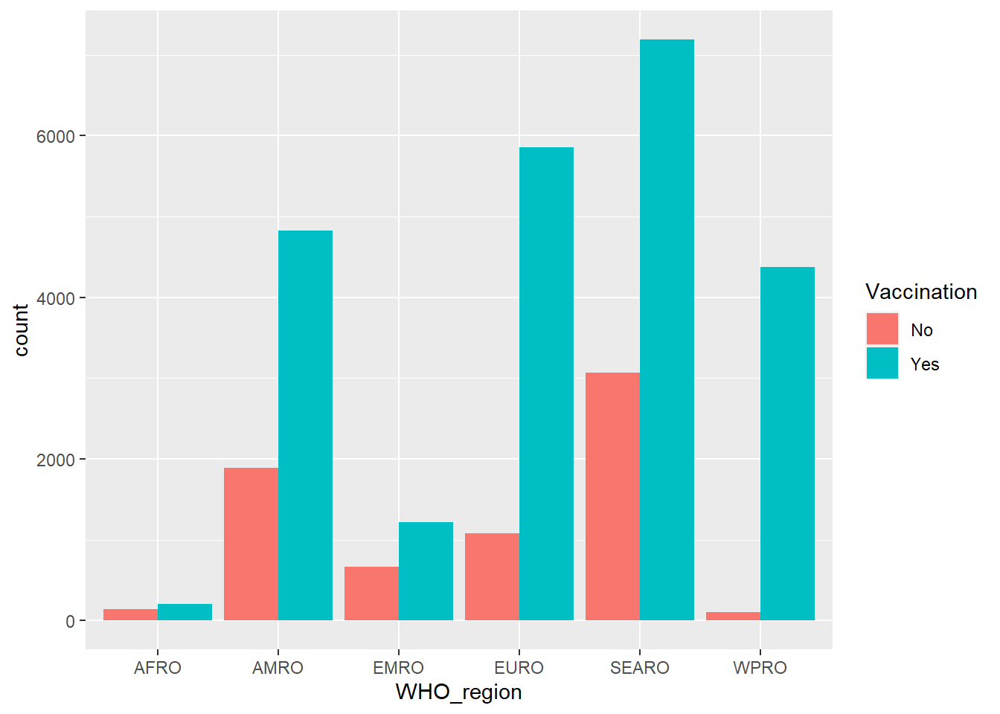
ggplot(tidy2, aes(x = WHO_region, y=count, fill = Vaccination)) +
geom_col(position = "dodge")
#scale_fill_manual(values = icecreamcolors)Now, we use bar chart to compare the infected cases before and after vaccinations. The reason of using bar chart rather than mosaic plot is that the cases now is only for infected cases and no categorial data. Hence, we use grouped bar chart to show the distribution of infected cases before and after vaccination. The y-axis, the count, refers to the total infected cases divided by the days before or after vaccination which can then compare vaccination on the right scale. As we can tell from the bar chart, vaccination does not help in preventing infection of Covid-19. Moreover, all of the regions has doubled the infected cases after vaccination. West Pacific, mainly East Asia, has surged up tremendously which adhere to the facts that East Asia countries had much stricter rules of quarantine which accords with the low cases before vaccination. Also, after the governments relaxed the restrictions, the infected cases rised accordingly. In sum, we are convinced that the vaccination does not help in preventing from infections just like Dr. Fauci and most specialists suggested.
4.4 Dive into Vaccinations
In this part, we explore the deep relationship between vaccinations and death rate. We gather the cumulative deaths and cases in each countries after their first vaccinated date. Then we merge this data with the all kinds of vaccinations percentages of each countries to determine whether some deep aspects inflect the death rate.
# 1. Vac data
vac_data <- read.csv(file="./data/vaccination-data.csv")
vac_data <- subset(vac_data, select = c(
ISO3,
TOTAL_VACCINATIONS_PER100,
PERSONS_VACCINATED_1PLUS_DOSE_PER100,
PERSONS_FULLY_VACCINATED_PER100,
PERSONS_BOOSTER_ADD_DOSE_PER100,
NUMBER_VACCINES_TYPES_USED)
)
# 2. daily cases
daily_case <- read.csv(file="./data/WHO-COVID-19-global-data.csv")
# Change country code to ISO3
daily_case$ISO3 = countryname(daily_case$Country, destination = 'iso3c')
daily_case$Date_reported = as.Date(daily_case$Date_reported)
cases_country = daily_case[daily_case$Date_reported == "2022-12-13", ]
cases_country <- merge(cases_country, vac_data, by="ISO3")
cases_country <- subset(cases_country, select = -c(
New_cases, New_deaths, Date_reported)
)
# 3: vaccination-metadata.csv -> get vaccination start date
vac_metadata <- read.csv(file="./data/vaccination-metadata.csv")
vac_metadata <- vac_metadata[vac_metadata$START_DATE != "", ]
# Get vaccination EARLIEST start date for each country
vac_start <- vac_metadata %>%
group_by(ISO3) %>%
summarize(
START_DATE = min(START_DATE)
)
vac_start$START_DATE = as.Date(vac_start$START_DATE)
# Merge two df
daily_case <- merge(daily_case, vac_start, by="ISO3")
# Compute Cumulative Death after vaccination
daily_case <- daily_case %>%
group_by(ISO3, Country_code, Country, WHO_region) %>%
summarize(
Cumulative_cases_after_vac = sum(New_cases[Date_reported >= START_DATE]),
Cumulative_death_after_vac = sum(New_deaths[Date_reported >= START_DATE]),
)
booster <- daily_case %>%
merge(vac_data, by="ISO3") %>%
drop_na()
booster$death_rate = booster$Cumulative_death_after_vac / booster$Cumulative_cases_after_vac * 1000ggplot(booster, aes(x = TOTAL_VACCINATIONS_PER100, y = death_rate)) +
geom_point(alpha = 0.5, color='blue')+
geom_smooth(method='lm', color = 'red', alpha=0.6)+
xlab("percentage of total vaccinations")+
ylab("deaths per 1000 cases")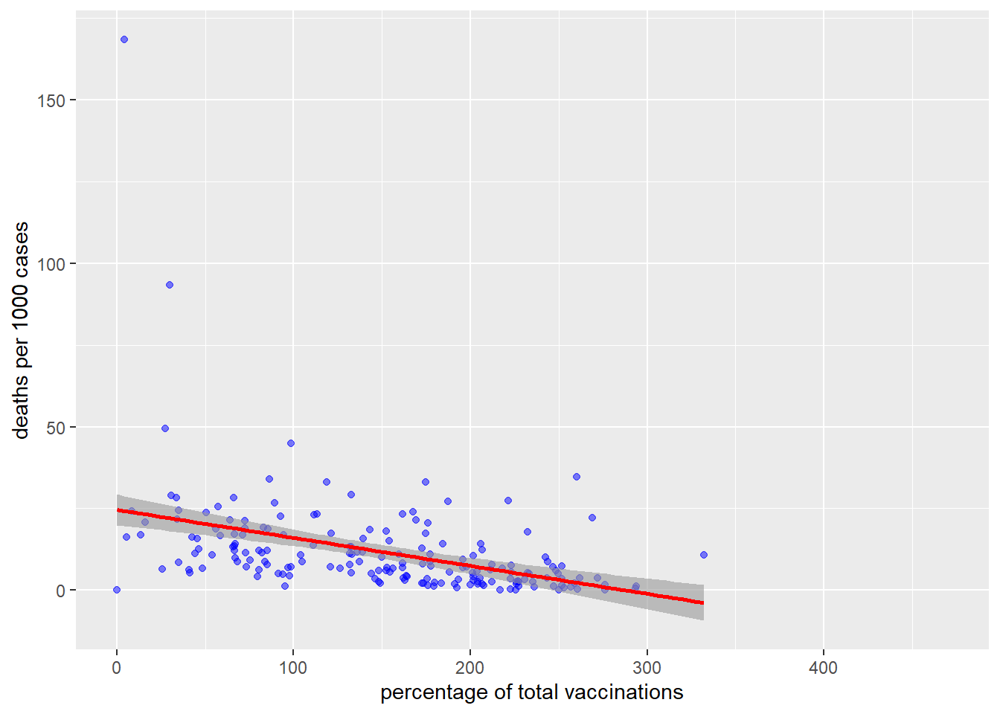
ggplot(booster, aes(x = PERSONS_VACCINATED_1PLUS_DOSE_PER100, y = death_rate)) +
geom_point(alpha = 0.5, color='blue')+
geom_smooth(method='lm', color = 'red', alpha=0.6)+
xlab("percentage of more than one dose vaccinations")+
ylab("deaths per 1000 cases")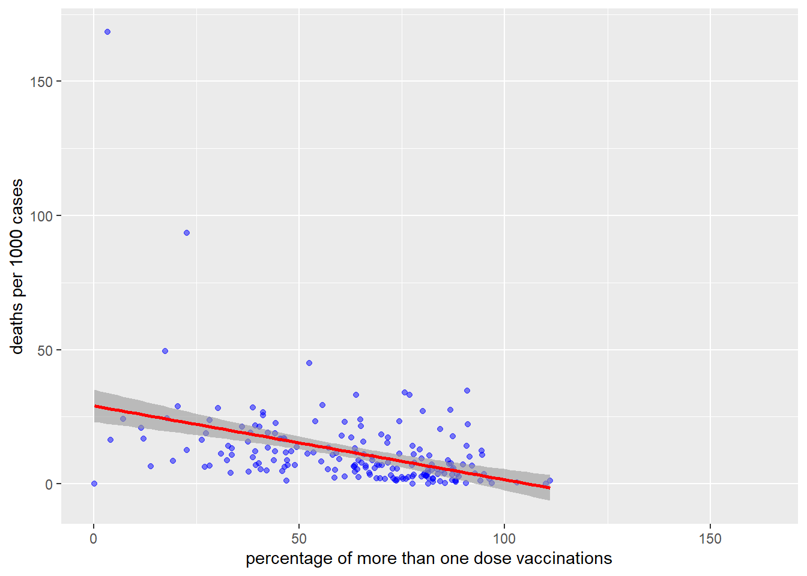
ggplot(booster, aes(x = PERSONS_FULLY_VACCINATED_PER100, y = death_rate)) +
geom_point(alpha = 0.5, color='blue')+
geom_smooth(method='lm', color = 'red', alpha=0.6)+
xlab("percentage of fully vaccinated")+
ylab("deaths per 1000 cases")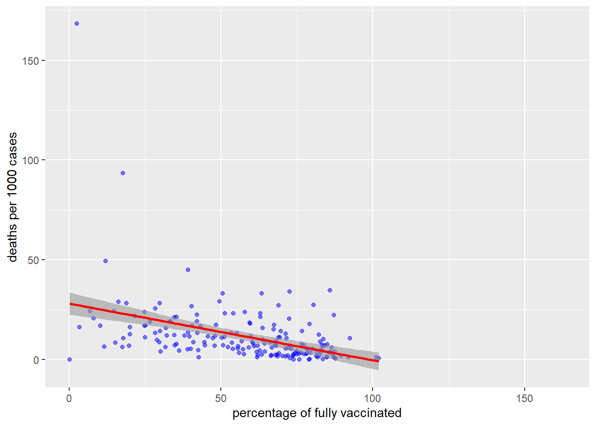
ggplot(booster, aes(x = PERSONS_BOOSTER_ADD_DOSE_PER100, y = death_rate)) +
geom_point(alpha = 0.5, color='blue')+
geom_smooth(method='lm', color = 'red', alpha=0.6)+
xlab("percentage of booster")+
ylab("deaths per 1000 cases")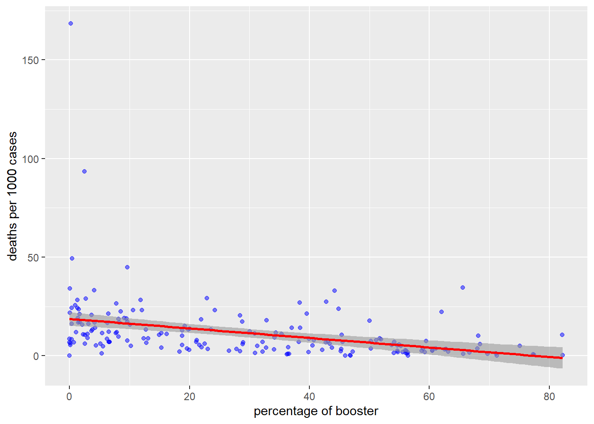
The results shows that all four variables are negatively associated with mortality, suggesting that vaccination is necessary to prevent high death rate.
Finally, we use box plot to show the relationship between death rate and the number of vaccination types used in a country.
ggplot(booster, aes(x = reorder(as.character(NUMBER_VACCINES_TYPES_USED), -death_rate, median), y = death_rate)) +
geom_boxplot()+
xlab("number of vaccination types used")+
ylab("deaths per 1000 cases")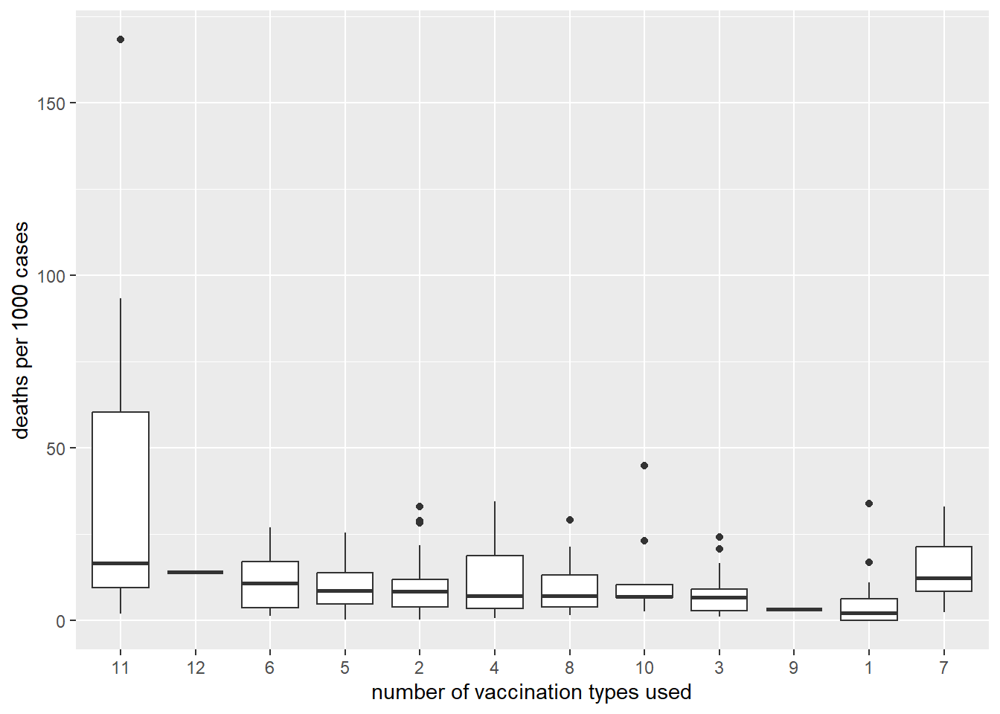
The box plot shows that there is no significant relationship between number of vaccination types used and the death rate (Countries who uses 11 types of vaccinations even have the largest median of death rate.)